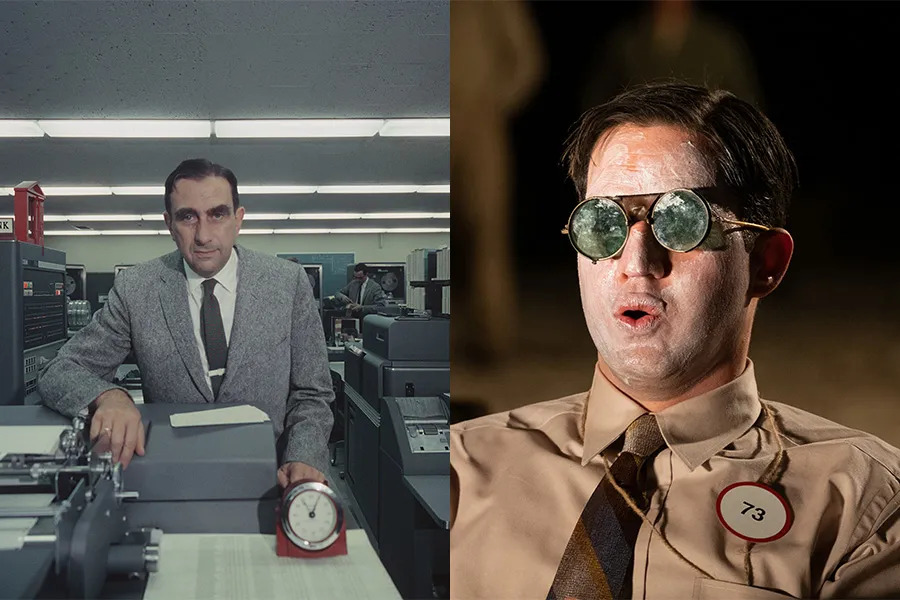
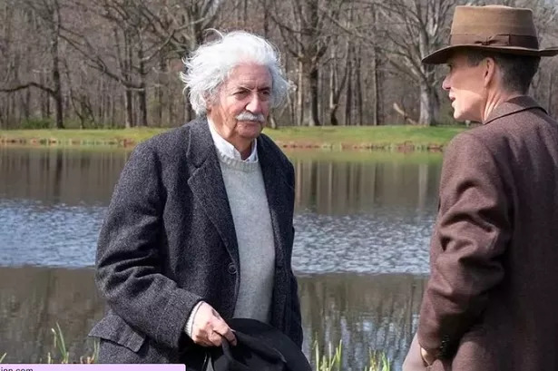

IMDb RATING
8.3 / 10
959k votes
8.3 / 10
959k votes

The brilliant physicist who led the Manhattan Project and wrestled with the moral implications of the atomic bomb.

Oppenheimer's wife, supportive yet complex, navigating the personal challenges of her husband’s work and fame.

A government official and later rival of Oppenheimer, involved in post-war nuclear policy decisions.

The military general who oversaw the Manhattan Project, working closely with Oppenheimer to build the atomic bomb.

A psychiatrist and Oppenheimer's former lover, whose political affiliations and personal connection deeply affected him.

A physicist who worked on the atomic bomb and later advocated for the development of the hydrogen bomb.

The legendary physicist, appearing briefly as a mentor figure and scientific influence on Oppenheimer.

A Nobel-winning physicist who advised and collaborated with Oppenheimer during the Manhattan Project.

A young physicist at Los Alamos, known for his brilliance and playful personality, contributing to the project’s success.

The U.S. President who authorized the use of the atomic bomb, intersecting with Oppenheimer’s work and legacy.

J. Robert Oppenheimer’s brother, also a physicist, who worked on the Manhattan Project and shared a close family bond.

Nolan's films are celebrated for their complex narratives, stunning cinematography, and critical acclaim, with an average overall rating of 8.9/10 from audiences and critics alike.